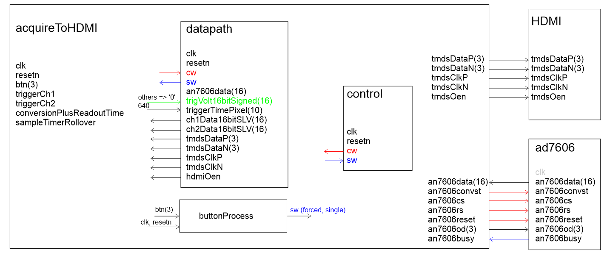
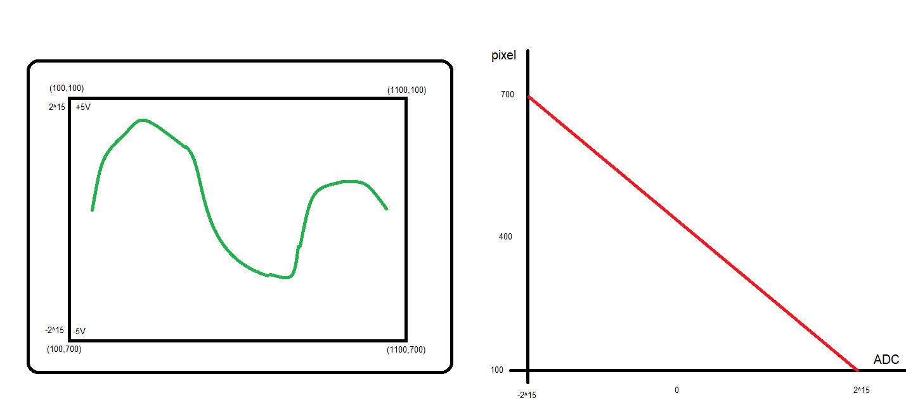

| Lecture | 27 |
| Handout | acquireToHdmi.pdf |
| Class Objectives | Have a firm understanding of the datapath and control needed to realize a circuit that can extract pairs of samples from the AD7606 and display them on a HDMI monitor. |
acquireToHDMI component

Architecture
The following is a walk-through of the oscilloscope functionality.- The analog input is sampled at a regular interval called the sampling rate.
- Each sample is a 16-bit 2's complement number.
- The width of the oscilloscope display, in pixels, is called a frame.
- Functionality
- The oscilloscope is either in FORCED or TRIGGER mode.
- FORCED mode, a button press starts sample acquisition.
- TRIGGER mode, wait for trigger even to start sample acquisition.
- TRIGGER mode
- The trigger voltage is a voltage level.
- If (prevAD7606sample < tigger) and (currAS7606sample > trigger) then TRIGGERED = true
- If (TRIGGERED = true) then store a frame's worth of consectutive samples in the BRAM.
- Displaying
- The videoSignalGenerator output the (horz,vert) pixel cordinate that is being displayed.
- If BRAM[horz] = vert then paint this pixel the waveform color
- As an analogy, this process can be thought of as follows. Imagine a 3D printer starting at the top of the display and moving the print head from left to right across the display one row at a time. When instructed, the printer head dispenses a waveform pixel. When the printer head gets to the end of a row, it returns to the left side, one row further down. In this analogy the position of the printer head is given by the videoSignalGenerator component. The print head "prints" when the BRAM contains a 2's complement value that is equal to the current vertical position of the head.
Converting Data into Pixels
You will need to convert the 16-bit 2's complement values from the AD7606 into pixel cordinates. This is the role of the "2sToPixel" box in the datapath below. In truth, I did not create a component for this task, but instead wrote a few lines of VHDL code to complete this task.The starting point for this conversion is establishing the mapping between the 2's complement vtalues coming from the AD7606 and the screen cordinates these points will be plotted at.

The waveforms on the display, green trace, consists of 16-bit 2's complement values where +5 volts correponds to 215 and -5 volts correponds to -215. On my display, the top is at vertical pixel cordinate 100 and the bottom is at 700 pixels. The next step is to write a linear equation for the mapping, shown at right in red, between the 2's complement values and the pixel cordinates.
y axis is pixel, denoted pixel x axis is 16-bit 2's complement values from AD7606, denoted ad7606 So re-interperting y = mx + b, we have pixel = m*ad7606 + b m = slope = Δy / Δx = -600/216 b = y intercept = 400 So pixel = -600*ad7606/216 + 400
Libraries
You will need the IEEE.NUMERIC library to convert between data types and perform operations.There are three major data types that you may want to utilized:
- STD_LOGIC_VECTOR
- SIGNED
- UNSIGNED
In order to performed signed multiplication (-600 * ad7606) you need to convert the ad7606 value into a signed value. You will accomplish this using the following syntax. ad7606Signed = (SIGNED) ad7606SLV; The text (SIGNED) acts to convert the following objet into a signed type with the same number of bits. You can do the same using the (STD_LOGIC_VECTOR) to convert a SIGNED type in to a same length STD_LOGIC_VECTOR. You can also create SIGNED constants using the TO_SIGNED(-600,16) to convert a SIGNED type
Once you have a signed type, you can perform operations like multiplication and bit shifting. I've included some code snippets below that you may find helpful. Remeber that multiplying two 16 bit vectors together produces a 32-bit result.
use IEEE.NUMERIC_STD.ALL;
architecture structure of datapath is
a_SLV: STD_LOGIC_VECTOR(15 downto 0);
a_SIGNED16, b_SIGNED16, c_SIGNED16: SIGNED(15 downto 0);
x_SIGNED32, y_SIGNED32 : SIGNED(31 downto 0);
begin
a_SIGNED16 <= (SIGNED) a_ALV;
b_SIGNED16 <= TO_SIGNED(-100, 16);
x_SIGNED32 <= a_SIGNED16 * b_SIGNED16;
y_SIGNED32 <= SHIFT_RIGHT(x_SIGNED32, 4);
c_SIGNED16 <= y_SIGNED32(15 downto 0);
end structure;
Datapath